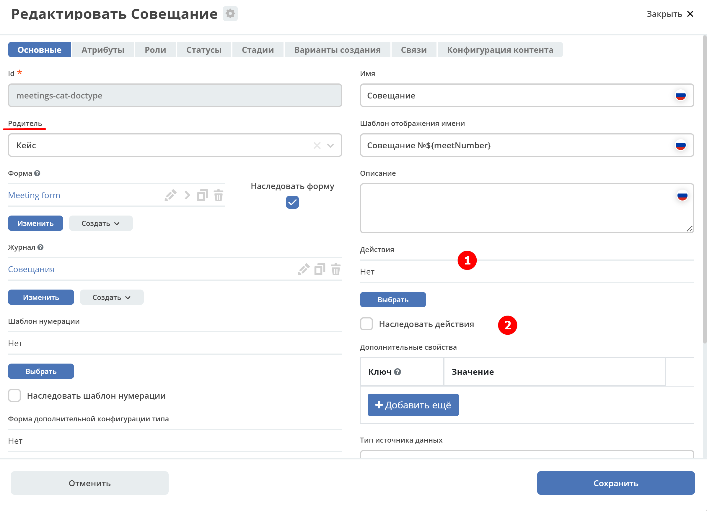

Действия
Раздел содержит описание работы действий в ECOS.
Действия - это артефакты ECOS в формате json или yaml с типом ui/action.
Одно действие может быть многократно использовано в разных местах системы (например, в журнале и на карточке документа).
Описание формата
Имя |
Тип |
Описание |
|---|---|---|
id |
String |
Идентификатор действия.
Уникальный среди всех действий в системе
|
key |
String |
Ключ, по которому возможна фильтрация.
Должен быть в формате word0.word1.word2, чтобы можно было фильтровать по маске.
|
name |
String |
Имя действия, которое увидит пользователь |
type |
String |
Тип действия.
Тип определяет логику, которая будет выполнена при выполнении действия.
|
icon |
String |
Иконка действия. Пример «icon-delete», «icon-on».
Все иконки можно посмотреть в
citeck/ecos-ui/src/fonts/citeck/demo.html |
config |
JsonObject |
Конфигурация действия.
Полезно в случаях, когда один тип действия может на основе конфигурации менять свое поведение.
Например - для действия с типом Download можно задать шаблон URI для скачивания контента.
|
predicate |
Predicate |
Используется для динамического определения доступности действия для пользователя.
Например, действия Редактировать и Удалить не могут выполнять пользователи без прав на запись и для них эти действия скрываются.
|
Получение действий по записи
Для запроса действий отправляется следующий запрос:
{
"query": {
"records": [
"workspace://SpacesStore/123123-123-123",
"workspace://SpacesStore/123123-123-124"
],
"actions": [
"ui/action$delete",
"ui/action$edit"
]
}
}
Ответ:
[
{
"record": "workspace://SpacesStore/123123-123-123",
"actions": [
{
"icon": "edit",
"key": "...",
"type": "mutate",
"config": {}
},
{
"icon": "delete",
"key": "...",
"type": "delete",
"config": {}
}
]
},
{
"record": "workspace://SpacesStore/123123-123-124",
"actions": [
{
"icon": "edit",
"id": "...",
"type": "mutate",
"config": {}
},
{
"icon": "delete",
"id": "...",
"type": "delete",
"config": {}
}
]
}
]
Так же доступен вариант раздельного указания действий по записям:
{
"query": {
"records": [
{
"record": "workspace://SpacesStore/123123-123-123",
"actions": [
"ui/action$delete",
"ui/action$edit"
]
},
{
"record": "workspace://SpacesStore/123123-123-555",
"actions": [
"ui/action$edit"
]
}
]
}
}
Фронтенд
На фронтенде действия описаны в виде javascript сущностей с методами
execForRecord, execForRecords, execForQuery, getDefaultModel, canBeExecuted и др.
Например: src/components/Records/actions/handler/executor/CreateAction.js
При выполнении действия вызывается метод execute в который передается запись, над которой выполняется действие и конфигурация действия.
Реестр действий описан в src/components/Records/actions/RecordActionExecutorsRegistry.js
Регистрация действий в реестре: src/components/Records/actions/index.js
Общие настройки любого действия
Конфигурация |
Описание |
|---|---|
Стандартные установки
|
id - идентификатор действия;
name - название действия;
type - тип;
config - дополнительные сведения;
icon - код картинки из иконочного шрифта citeck;
theme - имя темы.
features - использовать для записи/Record, записей/Records, поискового запроса/Query
|
Подтверждение и контент окна
|
Подтверждение выполнения действия
- если не заданы значения в confirm , действие выполняется без подтверждения
- title - заголовок окна (строка или объект с локализацией)
- message - сообщение в окне
- если задано formRef - отображается соответствующая форма в окне подтверждения (message игнорируется)
- attributesMapping - маппинг атрибутов, данные с формы подтверждения (комментарии и т.д.) можно прокинуть в поля конфигурации действия;
key - путь для записи в body конфигурации действия, value - путь к значению с формы.Ответ подтверждения, если он есть, к прочие данные с формы, передается в действие.
Например, в запросе необходимо отправить комментарий с формы подтверждения. Для этого настраиваем
body.comment. Внутри body в поле comment необходимо найти и записать значение из поля comment в форму подтверждения. |
Подстановка значения по атрибуту
|
В любом месте конфигурации можно подставлять атрибуты из записи, над которой происходит действие.
Есть один частный случай -
${recordRef}. Вместо него всегда подставляется recordRef текущей записи.Все остальные атрибуты подставляются так же как если они загружены через
Citeck.Records.load(...). Например: |
Отключение окна о результатах выполнения
|
По умолчанию
false |
Первоначальная обработка внешнем модулем
|
preActionModule указывается ссылка на модуль содержащая js код.Модулю нужно экспортировать функции
execForRecord или execForRecords (в зависимости от features), которые вызываются перед выполнением основного внутреннего действия.В функцию модуля передаются значения:
records, action, context.Ожидаемый ответ от функции модуля:
ключ-значения не обязательные, но обрабатываются только они.
config - объединяется со значением config из конфигурации самого действия
results - актуально для
execForRecords; внешнее действие может обработать какие-то записи и вернуть по ним результат.Если записи указаны в results, они исключаются из выполнения внутреннего основного действия.
Результаты внешнего и внутреннего объединяются для вывода информации.
|
Типы действий
view
id типа: view
Описание |
Конфигурация |
|---|---|
Открыть запись на просмотр. |
Дополнительные параметры для config:
background: Bool - открыть запись в новой вкладке приложения в фоновом режиме;
reopen: Bool - открыть запись в текущей вкладке приложения;
newBrowserTab: Bool - открыть запись в новой вкладке браузера
reopenBrowserTab: Bool - открыть запись в текущей вкладке браузера (с перезагрузкой страницы).
|
edit
id типа: edit
Описание |
Конфигурация |
|---|---|
Редактировать запись. |
attributes: Object<String, String> - атрибуты, которые будут прокинуты на форму создания. Необязательный параметр |
open-in-background
id типа: open-in-background
Описание |
Конфигурация |
|---|---|
Открыть запись в новой фоновой вкладке |
download
id типа: download
Описание |
Конфигурация |
|---|---|
Скачать некоторый контент связанный (или не связанный) с записью.
По умолчанию скачивается контент записи
|
url - URL для скачивания. Можно добавлять |
delete
id типа: delete
Описание |
Конфигурация |
|---|---|
Удалить запись |
{
"config" : {
"isWaitResponse" : false,
"withoutConfirm" : true
},
"type" : "delete"
}
isWaitResponse - ожидание ответа удаления (по умолчанию
true)withoutConfirm - удаление без подтверждения (по умолчанию
false) |
download-card-template
id типа: download-card-template
Описание |
Конфигурация |
|---|---|
Скачать печатную версию документа
|
templateType - тип шаблона
format - формат (html, pdf, pdf2, docx)
|
download-by-template
id типа: download-by-template
Описание |
Конфигурация |
|---|---|
Скачать документ по шаблону
|
templateRef - ссылка на шаблон
resultName - имя файла, который будет скачан
requestParams - дополнительные параметры, которые будут отправлены на сервер
|
view-card-template
id типа: view-card-template
Описание |
Конфигурация |
|---|---|
Просмотр печатной версии документа в новой вкладке браузера
(возвращаемый документ такой же как для события
download-card-template) |
templateType - тип шаблона
format - формат (html, pdf, pdf2, docx)
includeTimezone (по умолчанию -
true) |
upload-new-version
id типа: upload-new-version
Описание |
Конфигурация |
|---|---|
Загрузка новой версии документа |
create
id типа: create
Описание |
Конфигурация |
|---|---|
Действие для создания нового документа.
Обычно применяется когда требуется создать новый документ, в котором некоторые поля будут предзаполнены из данных текущего открытого документа.
|
typeRef: String - ECOS тип для создания. Обязательный параметр;
createVariantId: String - Идентификатор варианта создания для типа. Если не указан, то используется первый доступный вариант
createVariant: Object - Вариант создания для ситуаций, когда ни один вариант создания из типа не походит и требуется его полностью определить в действии
attributes: Object - Предопределенные атрибуты для создания новой сущности. Для прокидывания атрибутов с текущей записи (т.е. той, с которой выполняется действие) на форму создания можно использовать вставки вида
${attribute_name}options: Object - Опции формы
|
save-as-case-template
id типа: save-as-case-template
Описание |
Конфигурация |
|---|---|
Создается шаблон, затем по условию конфигурации - скачивание или переход на дашборд.
|
download
По умолчанию скачивается контент записи.
|
open-url
id типа: open-url
Описание |
Конфигурация |
|---|---|
Открывает заданный URL относительно текущего стенда.
|
URL - можно добавлять
${recordRef} для подстановки текущей записи |
assoc-action
id типа: assoc-action
Описание |
Конфигурация |
|---|---|
Выполняет действие над указанной ассоциацией.
|
assoc - ассоциация
action - объект действия
|
content-preview-modal
id типа: content-preview-modal
Описание |
Конфигурация |
|---|---|
Модальное окно с предпросмотром документа.
В конфигурации действия ожидается поле scale.
Возможные значения:
| auto
| 0…4
| page-fit
| page-height
| page-width
|
recordRef
|
fetch
id типа: fetch
Описание |
Конфигурация |
|---|---|
Отправляет запрос на указанный URL
|
url
method
args - аргументы, которые будут переданы в URL
body - аргументы, которые будут переданы в тело запроса
|
edit-task-assignee
id типа: edit-task-assignee
Описание |
Конфигурация |
|---|---|
Редактировать исполнителя задачи (запускается окно с выбором исполнителя).
Действие связано с бизнес-процессом записи.
|
actionOfAssignment [claim , release]
orgstructParams:{ userSearchExtraFields: custom:property1, custom:property2 }
custom:property1, custom:property2 - строка. Свойста ноды пользователя по которым будет осущетствлен поиск
|
view-business-process
id типа: view-business-process
Описание |
Конфигурация |
|---|---|
Просмотреть Бизнес-процесс
(окно с превью процесса и доп. действиями).
|
workflowFromRecord [true/ false]
|
cancel-business-process
id типа: cancel-business-process
Описание |
Конфигурация |
|---|---|
Отменить бизнес- процесс.
|
mutate
id типа: mutate
Описание |
Конфигурация |
|---|---|
Внесение изменений без участия пользователя посредством передачи атрибутов.
Доступно для
execForRecord и execForRecords |
record : {
id: "${recordRef}",
attributes: { "key": "value" }
}
record.id - необязательный параметр
record.attributes - изменяемые поля и их значения
|
set-task-assignee
id типа: set-task-assignee
Описание |
Конфигурация |
|---|---|
Назначение исполнителя задачи
(расширенный вариант edit-task-assignee)
|
assignTo - на кого назначить [me , group , someone]:
Необязательные параметры (можно использовать дополнительно или вместо assignTo):
|
task-outcome
id типа: task-outcome
Описание |
Конфигурация |
|---|---|
Действие используется в связке с
tasks-actions.Действие связано с бизнес-процессом записи.
|
label - заголовок варианта завершения задачи
outcome - идентификатор варианта завершения задачи
formRef - ссылка на форму задачи (uiserv/eform@…)
taskRef - ссылка на задачу (wftask@flowable$12345)
|
tasks-actions
id типа: tasks-actions
Описание |
Конфигурация |
|---|---|
Действие для загрузки вариантов завершения задач.
|
На выходе для каждой задачи получается основное действие и
variants с типом task-outcome где перечислены варианты завершенияОтображаются только задачи, которые может завершить текущий пользователь. Т.е. то же самое что и в виджете «Мои задачи».
Варианты завершения загружаются из конфигурации формы для задачи.
Находятся все кнопки с ключом outcome_* и преобразуются в варианты создания.
Если у задачи на форме есть поля, то показывается всплывающая форма с этими полями:
Если у задачи на форме нет полей, то показывается следующее окно:
Если форма пустая и в конфигурации для tasks-actions задано как
hideConfirmEmptyForm=true, окно не появляется, форма выполняется, действие завершается, уведомление, если успешно, появляется.
При выполнение вариантов действия, в каждый вариант передаются некоторые конфигурации:
то есть
config из tasks-actions передается в task-outcome.При этом у
task-outcome может быть свой конфиг, который может перезаписать прошедшие настройки. |
{kind=link}
{kind=link}
{kind=link}
edit-password
id типа: edit-password
Описание |
Конфигурация |
|---|---|
Изменение пароля
|
open-submit-form
id типа: open-submit-form
Описание |
Конфигурация |
|---|---|
Вызов формы редактирования с попыткой отправить в рассмотрение.
Действие связано с бизнес-процессом записи.
|
Если все поля заполнены корректны, форма отправляется и закрывается.
Иначе отображается список ошибок, после их исправления отправление вручную.
config.formId - необязательный параметр; без указания загружается форма по умолчанию.
|
Enterprise действия
id типа: transform
Описание |
Конфигурация |
|---|---|
Трансформация содержимого по заданным правилам и его скачивание или загрузка в атрибут с типом «контент»
|
input: Object // источник содержимого. По умолчанию - основное содержимое текущего документа;
transformations: Object[] // описание трансформаций;
output: Object // цель для результата трансформации. По умолчанию - временный файл, контент которого сразу же скачивается.
Подробнее о возможных настройках input, transformations и output можно прочитать здесь
Примеры:
1. Сконвертировать содержимое в PDF и скачать
|
Расширение действий
Добавление новых инстансов действий
Для добавления новых инстансов действий необходимо описать их в json виде и добавить их в alfresco (в микросервисы так же можно добавлять действия) по пути
{alfresco_module_id}/src/main/resources/alfresco/module/{alfresco_module_id}/ui/action
Пример описания:
{
"id": "confirm-list-html",
"key": "card-template.confirm-list.html",
"name": "Скачать лист согласования",
"type": "download-card-template",
"config": {
"templateType": "confirm-list",
"format": "html"
}
}
Для тестирования можно заливать эту конфигурацию в журнале действий вручную.
Добавление новых типов действий
На данный момент все типы описаны в базовом проекте ecos-ui (в планах есть поддержка расширения действий без изменений в ecos-ui).
Описать новое действие:
export const DownloadAction = {
execute: ({ record, action }) => {
const config = action.config || {};
let url = config.url || getDownloadContentUrl(record.id);
url = url.replace('${recordRef}', record.id); // eslint-disable-line no-template-curly-in-string
const name = config.filename || 'file';
const a = document.createElement('A', { target: '_blank' });
a.href = url;
a.download = name;
document.body.appendChild(a);
a.click();
document.body.removeChild(a);
return false;
},
getDefaultModel: () => {
return {
name: 'grid.inline-tools.download',
type: 'download',
icon: 'icon-download'
};
},
canBeExecuted: ({ record }) => {
return record.att('.has(n:"cm:content")') !== false;
}
};
Зарегистрировать новый тип:
import Registry from './RecordActionExecutorsRegistry';
import { DownloadAction } from './DefaultActions';
Registry.addExecutors({
download: DownloadAction,
});
Настройки списка действий
Настройка действий на dashboard
Настройка действий на dashboard осуществляется в журнале типов данных, который располагается в системных журналах:
{kind=link}
1 - выбрать список действий для типа.
2 - если стоит чекбокс, то действия наследуются от родителя.
Настройка действий в журналах
Действия в журнале описываются в разделе actions перед headers и содержат ссылки на те же действия, что и в типах. Если действия не описаны, то используется список действий по умолчанию:
ui/action$content-download
ui/action$edit
ui/action$delete
ui/action$view-dashboard
ui/action$view-dashboard-in-background
Примеры настроек действий:
<journal id="ecos-sync">
<datasource>integrations/sync</datasource>
<create>
<variant title="Alfresco Records">
<recordRef>integrations/sync@alfrecords</recordRef>
<attribute name="type">alfrecords</attribute>
</variant>
</create>
<actions>
<action ref="ui/action$ecos-module-download" />
<action ref="ui/action$delete" />
<action ref="ui/action$edit" />
</actions>
<headers>
<header key="module_id" default="true"/>
<header key="name" default="true"/>
<header key="type" default="true"/>
<header key="syncDate" default="true"/>
<header key="enabled" default="true"/>
</headers>
</journal>
Настройка действия, которое активно для записей с определенным mimetype контента:
{
"id": "edit-in-onlyoffice",
"key": "edit.onlyoffice",
"name": "Редактировать Документ",
"type": "open-url", // тип действия должен соответствовать типу на UI
"config": {
"url": "/share/page/onlyoffice-edit?nodeRef=${recordRef}&new="
},
"evaluator": {
"type": "predicate", // Тип evaluator'а для фильтрации действий
"config": {
"predicate": {
"t": "in",
"att": "_content.mimetype?str", // атрибут, который мы проверяем
"val": [ //значения, на которые мы проверяем
"application/vnd.openxmlformats-officedocument.wordprocessingml.document",
"application/vnd.openxmlformats-officedocument.spreadsheetml.sheet",
"application/vnd.openxmlformats-officedocument.presentationml.presentation",
"text/plain",
"text/csv"
]
}
}
}
}
Данный конфиг достаточно положить в ecos-app/ui/action для микросервисов или в {alfresco_module_id}/src/main/resources/alfresco/module/{alfresco_module_id}/ui/action для Alfresco
Техническая информация
Вспомогательные параметры
Параметр |
Описание |
|---|---|
actionRecord |
В любую форму, которая вызывается из действия, в объект
options устанавливается свойство actionRecord, указывающее идентификатор записи (record), для которой выполняется действие.Данное значение только для чтения. Указать в действии
config.options.actionRecord не нужно, пользовательское будет перезаписано. |
Ожидаемый формат результат действия
Тип результата boolean или object (array - deprecated - обработка поддерживается)
Если object отображаются подробности выполнения в зависимости от типа результата.
Для групповых действий модальное окно появляется сразу при запуске и если результат boolean автоматические закрывается.
link
Отображаемый результата выполнения - ссылка на скачивания отчета
{
"type": "link",
"data": {
"url": "..."
}
}
results
Таблица записей с результатом выполнения действия
{
"type": "results",
"data": {
"results": [
{
"recordRef": "workspace://SpacesStore/...",
"disp": "название записи"
"status": "OK",
"message": "Все хорошо"
}
]
}
}
error
Вывод ошибки. Возможно автоматическое создание.
{
"type": "error",
"data": {
"message": "..."
}
}
Примечание
В колонке ID типа используйте форматирование для типа - Heading 3 (вместо Normal text) - так оно попадет в список доступных действий и будет возможность ссылки-якоря
Если описание конфигурации большое используете Expand панель (+)